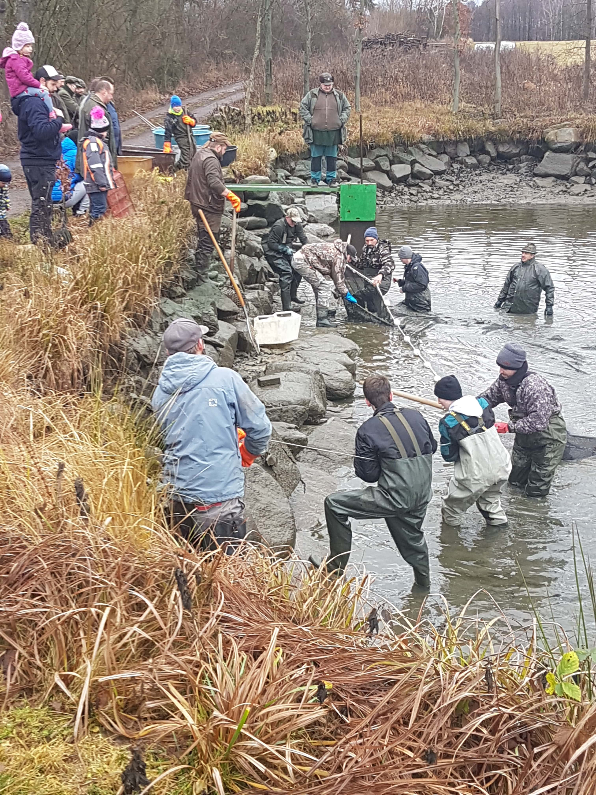
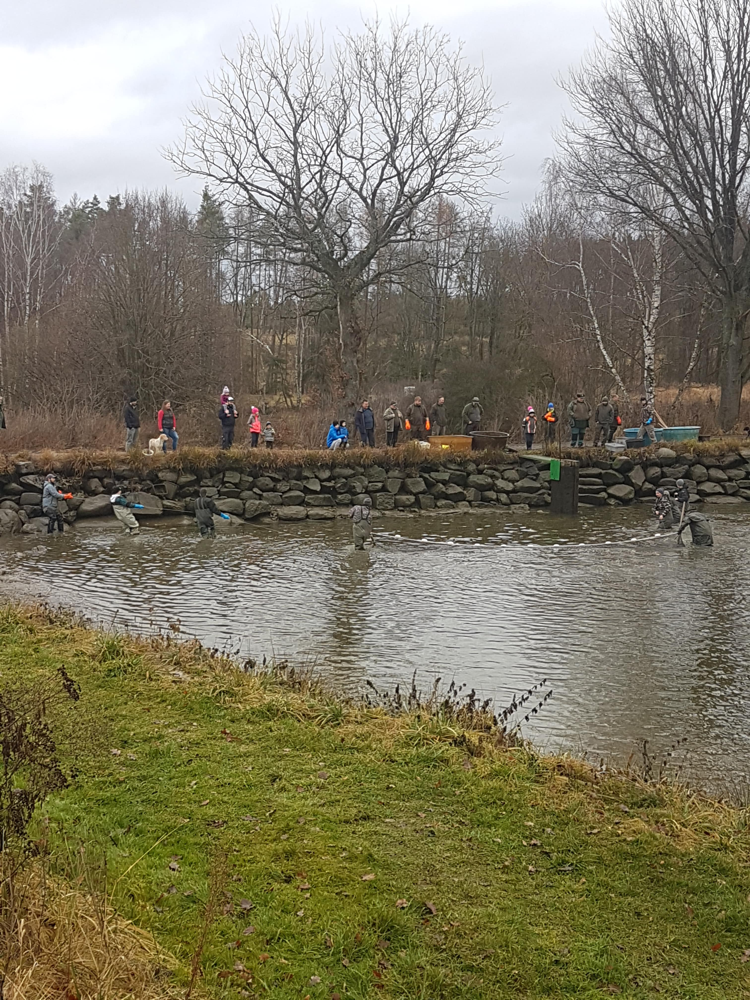

<h3 style="text-align: center;"><span style="text-decoration: underline;">Jeden můj den o<em> prázdninách</em>💩</span></h3> <hr /> <p><span style="text-decoration: underline; background-color: #ffffff;"><a style="background-color: #ffffff;" title="Jak začít nudný den" href="word.html#den0" target="_self">Jak začít nudný den</a> - <a style="background-color: #ffffff;" title="Jak z nudného dne udělat zajímavý den" href="word.html#den1" target="_self" rel="noopener">Jak z nudného dne udělat zajímavý den</a> - <a style="background-color: #ffffff;" title="Jak správně ukončit den" href="word.html#den2" target="_self">Jak správně ukončit den</a> - <a title="Konec" href="word.html#about" target="_self">Konec</a></span></p> <hr /> <h4 id="den0" style="line-height: 0.8;"><em>Jak začít nudný den</em></h4> <p id="nuda" style="text-align: justify; padding-left: 40px;">Začaloto nudně jako většina mých dní o prázdninách. Vstal jsem, nasnídal se, vyčistil si zuby a šel si zase lehnout. Ale nebyl to obyčejný den a tak jsme vyrazili na výlet do obce Blatná, kde pořádali známí výlov rybníka. 🥳</p> <h4 id="den1" style="text-align: justify; line-height: 0.8;"><em>Jak z nudného dne udělat zajímavý den</em></h4> <p style="padding-left: 40px; line-height: 1.4;">Moc se mi to líbilo, takové akce mám moc rád, protože člověk vidí lidi, které do Prahy ani nepáchnou 🙃. Když je člověk na takové akci tak nesmí chybět dobrá dršťkovka nebo dobrá divočina. 🥩</p> <h4 id="den2" style="line-height: 0.8;">Jak správně skončit den</h4> <p style="padding-left: 40px;">Takový krásný den se dá zakončit jistě nějak zábavně, ale já jsem nudný člověk a tak jsem večer koukal na seriál <a title="seriál" href="https://expanse.fandom.com/wiki/Season_3" target="_blank" rel="noopener">The Expanse</a> do 3 ráno 🤨.</p> <p></p> <p><br /><br /><br /><br /><br /><br /><br /><br /><br /><br /><br /><br /><br /><br /><br /><br /><br /><br /><br /><br /><br /><br /><br /><br /><br /><br /><br /></p> <hr /> <pre id="about"><a title="Návod na cokoliv" href="navod_na_cokoliv.html" target="_blank" rel="noopener">Návod na cokoliv</a></pre>